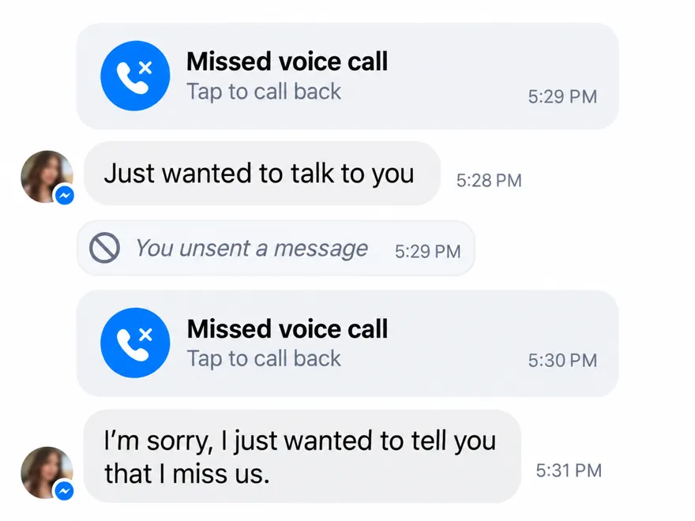

Discover how to make your ex miss you in just 60 seconds

Use this psychological message and he'll start reaching out to you again. It doesn't matter if you cheated on him, if he blocked you, or if he's with someone else now.
- Besides this message, you'll get a personalized win-back protocol
- You'll discover the mistake that makes 93% of women lose their ex forever… and how to avoid it
- You'll also learn the “dirty” shortcut to bring him back within the next 48 hours
Take the quiz and unlock the message 👇🏻